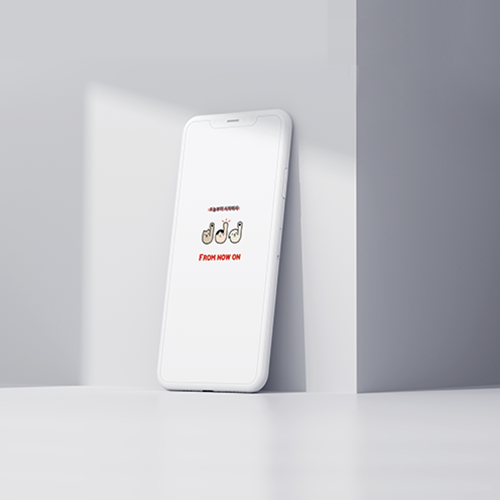
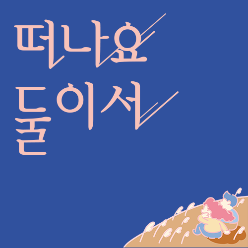

과학의 발전으로 모두가 만족할 수 있게 만들어진 세계는 유토피아인가, 디스토피아인가?
지금이 포드 632년(A.D. 2540)이라고 가정하고 알파 계급의 사람들을 위한 유토피아 홈페이지를 제작하였다. 2019년의 관점에서는 다소 충격적일 수 있는 일상들을 가벼운 분위기를 통해 역설적으로 표현했다.

Interactive Media From Now On
항상 일을 벌여놓지만 쉽게 지치고 목표까지 얼마나 남았는지 알기 쉽지 않아 포기한 적이 많았다. 하지만 다이어리에 할 일을 적고 그날그날 달성한 것에 대해 기록하니 목표 달성률이 올라갔다. 다이어리가 아닌 목표 달성만을 위해 기록할 수 있는 앱이 있었으면 좋겠다는 생각이 들어 프롬나우온 을 기획했다.

Multimedia Design떠나요 둘이서
중장년커플이 알콩달콩하면 왠지 불륜일것 같은 사회
적 편견과 소개팅앱은 불건전한 목적으로 이용될꺼라
는 인식이 있다. 또한 인구의 절반 이상이 중장년인데
소개팅앱의 이용율은 현저히 낮았다. 그래서 중장년
들이 안심하고 사용할 수 있으며, 건전한 이미지를 가
진 앱을 기획하게 되었다.